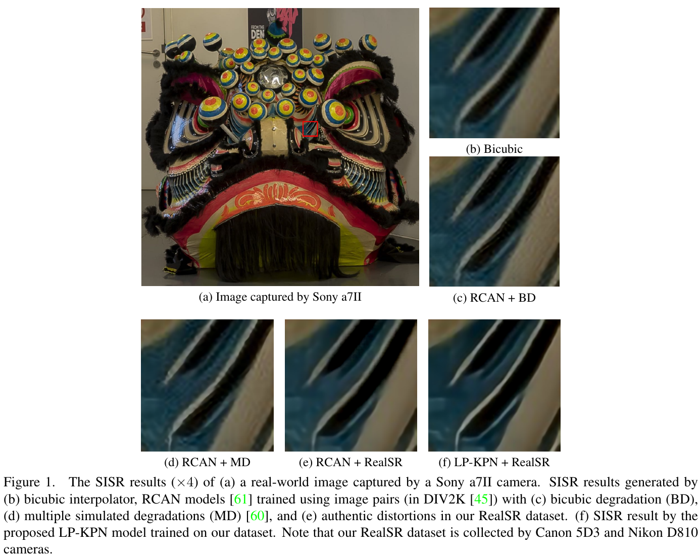
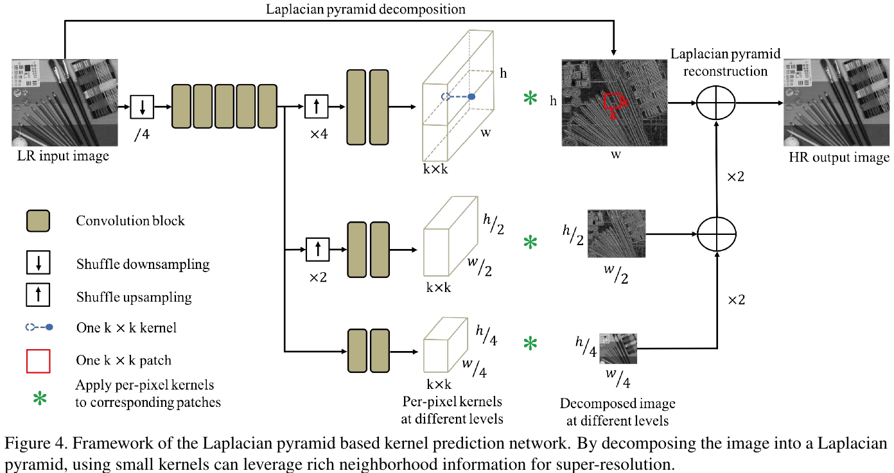
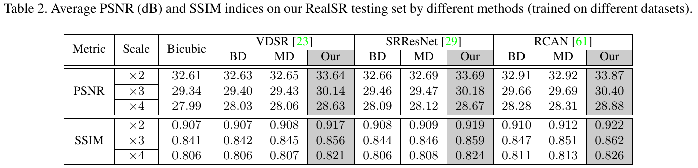
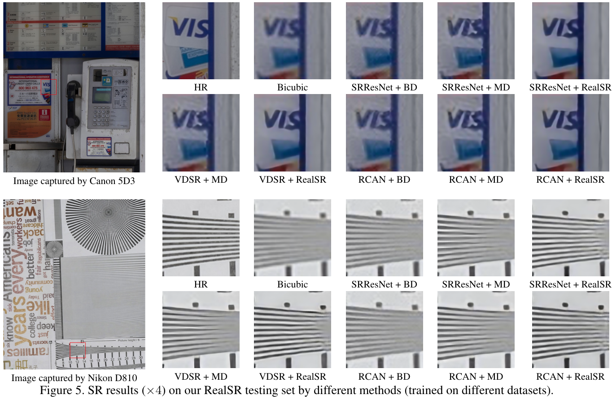
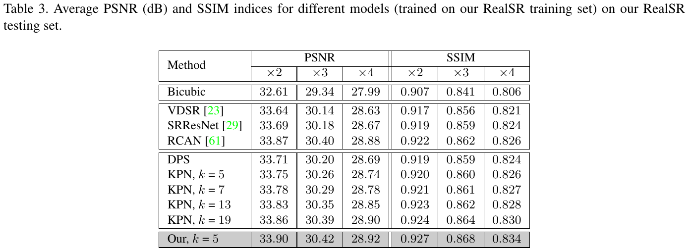
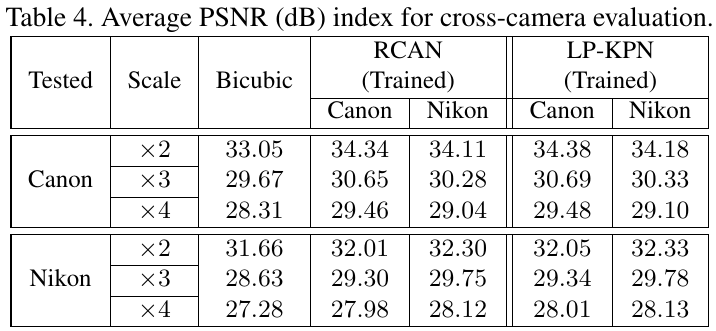
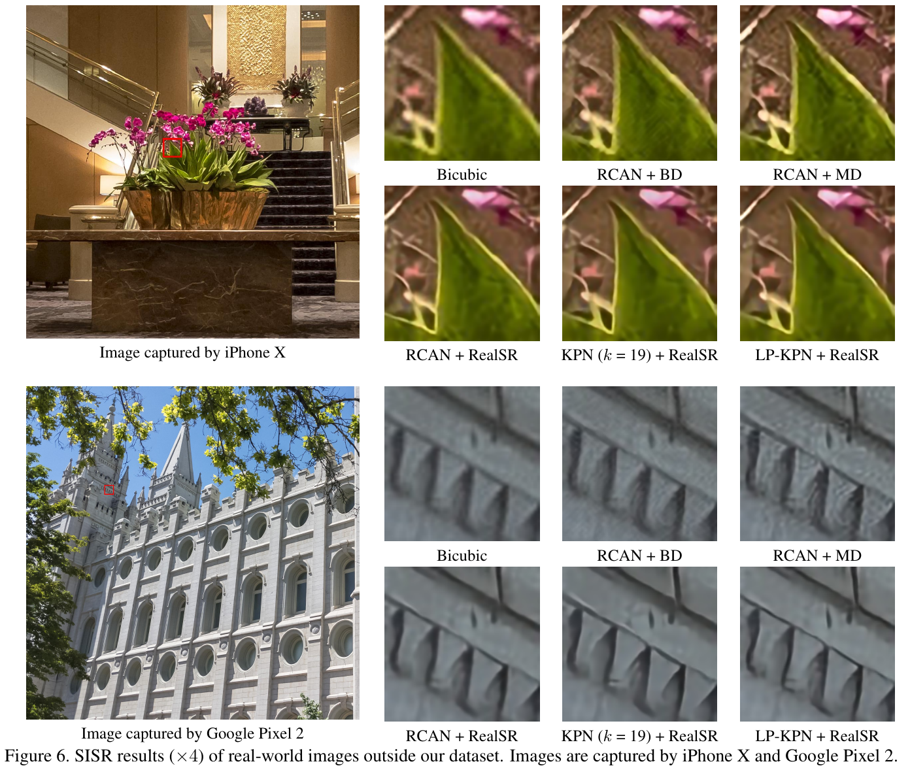

Toward Real-World Single Image Super-Resolution: A New Benchmark and A New Model

问题
合成退化和真实退化 (镜头像差、景深模糊、传感器、ISP) 差距大，在 bicubic 数据上训的模型到真实图上基本失效。
数据
单反上三脚架，同一场景拍 105mm (HR) 和 50/35/28mm (LR)。先做畸变校正和中心裁剪，再用「仿射 + 亮度」鲁棒配准逐级对齐，共 234 个场景、595 对。
模型
LP-KPN 在 Y 通道上做三层拉普拉斯金字塔，每层预测逐像素 5×5 核再做线性滤波，用小核拿到大感受野。
结论
同一网络，训练数据从合成换成真实，×2 上涨约 1 dB。LP-KPN 用 RCAN 1/6 左右的参数拿到略高的 PSNR/SSIM，跨相机测试掉 0.3 dB。
1. 出发点 (Motivation)
2019 年以前，主流 SISR 数据集 (Set5/Set14/BSD/Urban100/DIV2K) 的 LR 都是由 HR 合成的：bicubic 下采样，或者高斯模糊加直接下采样 [§2]。这种退化简单且空间一致，模型学到的其实是「怎么撤销 bicubic」。真实相机里的退化是镜头 PSF、随深度变化的离焦 (circle of confusion)、传感器采样、降噪和 JPEG 叠在一起的结果，而且随空间位置变化。
论文用 Table 2 证明了这件事：在 RealSR 测试集上，用 DIV2K-BD 训练的 VDSR 只比 bicubic 高 0.02 dB (32.63 vs 32.61, ×2)；换成 MD (多种合成退化，SRMD 的做法) 也只再多 0.02–0.03 dB。合成退化做得再「复杂」，只要不像真的，就几乎没用。
要拿真实配对，以前只有两次实验室尝试：分光镜双相机拍人脸 (31 张) 和传感器 hardware binning (14 个场景) [§2]。RealSR 想要一个普通人能复现的采集方式：同一台相机，只拧变焦环。
SISR
单图超分：只用一张低分辨率图恢复高分辨率图。
BD / MD
两种合成训练数据：BD 是 bicubic 下采样；MD 是多种模糊核和噪声组合的合成退化 (来自 SRMD)。
KPN
核预测网络：网络不直接输出像素，而是给每个像素输出一个 k×k 权重，输出像素等于输入邻域的加权和。
拉普拉斯金字塔
把图像拆成「每层带通细节 + 最底层低通」，且能无损重建。低层分辨率小，小核就能覆盖原图的大范围。
IRLS
迭代重加权最小二乘：用「残差越大权重越小」的加权最小二乘去逼近 L1 这类鲁棒范数。
Pixel shuffle
把 h×w 图重排成 (h/r)×(w/r)×r² 的通道 (或反过来)，无损地改变分辨率，用来省计算。
Y 通道评测
PSNR/SSIM 只在 YCbCr 的亮度通道上算，颜色通道不计分。
景深 (DoF)
画面里清晰的深度范围。焦距一变，景深和离焦模糊就跟着变，所以真实退化随深度不同。
2. 方法 (Method)
论文有两个贡献，彼此独立：(A) 一套采集 + 配准流程，产出 RealSR 数据集；(B) LP-KPN 网络。对「手机 → 相机」专项来说，(A) 比 (B) 更值钱。
2.1 为什么拧变焦环就能得到 LR/HR：薄透镜近似
相机近似为薄透镜，物距 \(u\)、像距 \(v\)、焦距 \(f\) 满足 \(\frac1f=\frac1u+\frac1v\)，放大率 \(M=h_2/h_1=v/u\)。拍摄距离 \(u>3\,\text{m}\) 而最大焦距只有 105 mm，即 \(u\gg f\)，于是
—— 翻译: 物体在传感器上的成像尺寸 h₂ 大致与焦距 f 成正比。同一个物体，105mm 拍出来的像素尺寸约是 28mm 的 105/28 ≈ 3.75 倍，所以两张图之间的初始缩放比可以直接取焦距之比。
打个比方：传感器像素数固定，焦距越长，同一片叶子就分到越多像素，等于用更「密」的采样拍同一场景。105mm 那张是 HR，短焦那张是同一场景的「真实」LR，镜头、传感器和 ISP 的退化全都带着。
实拍设置 [§3.2]：Canon 5D3 (5760×3840) 和 Nikon D810 (7360×4912)，各配一支 24–105mm f/4 变焦镜头，每个场景拍 105/50/35/28mm 四档。不用 24mm 是因为畸变太难校正。用光圈优先，光圈按景深取值 (景深要覆盖整个场景，又要避开衍射)，低 ISO，对焦、白平衡、曝光都是自动，中央重点测光，三脚架加蓝牙快门，关掉镜头防抖并预升反光板。共 234 个场景，去掉运动物体、曝光不当和模糊的样本后剩 595 对 (Table 1)。
2.2 渐进配准：仿射 + 亮度的鲁棒 IRLS

变焦带来的不只是视场变化，还有光心漂移、实际缩放比偏离焦距比、曝光不同和镜头畸变。亮度和尺度不同时，SIFT/SURF 关键点达不到像素级精度 [§3.3]，所以作者直接优化像素误差：
—— 翻译: 找一个仿射变换 τ 把 LR 图扭到 HR 的网格上 (C 是裁成同样大小)，同时用一个全局线性亮度 α·x+β 抹掉两次曝光的差异，使两张图逐像素的鲁棒误差 (L1 或更鲁棒) 最小。
求解是交替进行的。固定 τ 时，α、β 直接取「均值方差匹配」：\(\alpha=\mathrm{std}(I_H)/\mathrm{std}(I'_L)\)，\(\beta=\mathrm{mean}(I_H)-\alpha\,\mathrm{mean}(I'_L)\)。固定 α、β 时，对 τ 做一阶线性化 (Gauss-Newton)，加权后解一个最小二乘：
—— 翻译: J 是「图像对 6 个仿射参数的导数」(梯度乘坐标)。每一步按当前残差解出参数增量 Δτ；残差大的像素 (遮挡、运动、高光) 权重 w 小，等于用加权 L2 去近似 L1。初值来自焦距比，所以收敛很快 (论文说 5 次以内)。
数值例子：28mm→105mm，\(s=105/28=3.75\)。仓库 Demo.m 用 \(r=1-1/s\) 构造一个相似变换 [-r,0,0,0]，以图像中心为原点把 LR 放大 \(s\) 倍作为初值，再进入 align_l。
repo/Alignment/Demo.m:L11-L20 — 用焦距比初始化缩放，然后配准，最后做亮度/颜色迁移
s = 2; % s = len1/len2, len1&lend2 are the focal length of captured image (len1>len2)
r = 1 - 1/s; % Scale
I2_zoom = warpImg(I2,[-r,0,0,0]);
tau0 = zeros(6,1);
iter = 3; % number of iterations
[I2_t,tau] = align_l(I2_zoom,I1,tau0,iter);
[I2_t_l] = luminance_transfer(I1,I2_t); % transfer luminance
[I2_t_c] = color_transfer(I1,I2_t); % transfer color
这里有个论文没写的细节：最后写盘的是 I2_t_c，即 color_transfer 的输出，不是论文 Eq. 4 里的 α,β 亮度调整结果。color_transfer 做的是三通道全协方差匹配：先白化 LR 的 RGB 协方差，再按 HR 的协方差上色，得到一个全局 3×3 仿射颜色变换 \(Z=AY+b\)：
repo/Alignment/Opt_reg_color/color_transfer.m:L15-L27 — 全局 3×3 颜色仿射：A = S_x^{1/2} S_y^{-1/2}
mu_x=mean(X);
S_x=(X-repmat(mu_x,[m1*n1,1]))'*(X-repmat(mu_x,[m1*n1,1]))/(m1*n1);
[Ux,Dx,~]=svd(S_x);
mu_y=mean(Y(ind,:));
S_y=(Y(ind,:)-repmat(mu_y,[size(ind,1),1]))'*(Y(ind,:)-repmat(mu_y,[size(ind,1),1]))/(size(ind,1));
[Uy,Dy,~]=svd(S_y);
A=Ux*diag(diag(Dx).^(0.5))*Ux'*Uy*diag(diag(Dy).^(-0.5))*Uy';
b=mu_x'-A*mu_y';
Z=A*Y'+repmat(b,[1,m2*n2]);
配准主循环在 regMGNC_l.m 里，是一个由粗到细的图像金字塔，论文同样没提。每层先把上一层的平移量乘 2 传下来，再跑若干次 IRLS。权重 1./(abs(residue)+0.1) 正是 L1 的 IRLS 权重 (\(\|r\|_1=\sum r^2/|r|\))，加 0.1 防止除零：
repo/Alignment/Opt_reg_luminance/regMGNC_l.m:L15-L40 — coarse-to-fine 金字塔 + IRLS 重加权 (w = 1/(|r|+0.1))
[~,lum]=luminance_transfer(img1,img2);
for l = (numLevel):-1:0
%% construct pyramid
I1 = imresize(img1,0.5^l,'Antialiasing',true);
I2 = imresize(img2,0.5^l,'Antialiasing',true);
% initialize
if l == numLevel
weight = ones(size(I1));
tau(end-1:end) = 0.5^(l-1)*tau(end-1:end); % pass from the initial value
else
weight = imresize(weight,size(I1));
tau(end-1:end) = 2*tau(end-1:end); % pass from previous level
end
%% gradually nonconvexity
% reweighted least square
for iter = 1:(maxiter+fix(numLevel/2))
tau_old = tau;
[img2warp,tau,residue,~,lum] = regImg_l(I1,I2,tau_old,lum,weight,1);
weight = 1./(abs(residue)+0.1);
%weight = weight/max(weight(:));
if max(abs((tau_old-tau)./(tau+eps))) < 0.0001
break
end
end
end
每次 IRLS 的内层是 Eq. 7 的实现：warp → 只在仍落在图像内的像素 (OmegaOut==0) 上重估亮度 α,β → 残差 y → Jacobian X (6 列：x·Ix, x·Iy, y·Ix, y·Iy, Ix, Iy) → 带 Levenberg 阻尼 (0.0001*diag(diag(A))) 的加权正规方程：
repo/Alignment/Opt_reg_luminance/regImg_l.m:L30-L54 — 单步加权 Gauss-Newton：亮度在环内重估，越界像素权重置零
for iter = 1:maxIts
% warping to calculate I2(X) = I1(f(X,tau))
[I2warp,OmegaOut] = warpImg(I2,tau);
ind=find(OmegaOut==0);
[I2warp_lum,lum]=luminance_transfer(I1,I2warp,ind);
% I2warp_lum=lum(1)*I2warp+lum(2);
% get derivatives
%% compute least square solution
y = reshape(I1-I2warp_lum,[sizeD,1]);
X=getJacob(I2warp_lum,tau);
% compute X(i,:) = [I2x,I2y]*Jacob(d[x;y]/d tau)
%X=-X;
% solve
% Weight=weight;
Weight=weight.*(OmegaOut(:)==0);
A = X'*bsxfun(@times,X,Weight);
dtau= (A+0.0001*diag(diag(A)))\(X'*(Weight.*y));
tau = tau + dtau;
% check termination condition
if max(abs(dtau)./(tau+eps)) < 0.0001;
break
end
end
README 写的完整流程是「粗配准 → 中心裁剪 → 精配准 → 丢掉没对齐的对」。最后一步「丢弃」靠的是人工筛选还是阈值，仓库里没有对应代码。
2.3 LP-KPN：每个像素一个核，拉普拉斯金字塔让小核看得远

配准后的 \(I^A_L\) 和 \(I_H\) 同样大小 (配准时 LR 已被 bicubic 插值到 HR 网格)，所以这里的「超分」实际上是一个同尺寸的复原/增强问题，×2/×3/×4 只表示两张图的焦距比。真实退化的模糊核随深度变化，所以作者选 KPN，让每个像素有自己的滤波器：
—— 翻译: 输出像素 = 该像素周围 k×k 个输入像素的加权和，权重 K(i,j) 由网络为这个位置单独预测。网络只决定「怎么混合已有像素」，不直接生成新的像素值。
问题在于核张量 \(T\in\mathbb R^{k^2\times h\times w}\) 随 \(k\) 平方增长。LP-KPN 先把 Y 通道拆成三层拉普拉斯金字塔 \(\{S_0,S_1,S_2\}\) (尺寸 \(h\times w\)、\(\frac h2\times\frac w2\)、\(\frac h4\times\frac w4\))，每层预测一个 \(5\times5\) 核张量，分别滤波后再重建：
—— 翻译: 最粗的一层 (1/4 尺寸) 上一个 5×5 核在原图上相当于 20×20 的范围，负责大尺度的模糊和亮度结构；最细的一层只管高频细节。三个小核合起来覆盖大邻域，计算量却远低于直接预测一个 19×19 或 20×20 的核。
逐像素卷积在 Caffe 里是一个自定义层 PixelConv：im2col 把每个像素的 k×k 邻域摊成列，和预测的核逐元素相乘，再用一个全 1 向量做 GEMM 求和，正好对应 Eq. 8 的内积：
repo/Layer/KPL/PixelConv_layer.cpp:L52-L77 — Eq. 8 的实现：im2col × 逐像素核 → 对 k² 维求和
template <typename Dtype>
void PixelConvLayer<Dtype>::Forward_cpu(const vector<Blob<Dtype>*>& bottom,
const vector<Blob<Dtype>*>& top) {
const Dtype* weights = bottom[0]->cpu_data(); // learned weight
const Dtype* bottom_data = bottom[1]->cpu_data(); // input data
Dtype* top_data = top[0]->mutable_cpu_data();
for(int n = 0; n < num_; ++n) {
for (int c = 0; c < channels_; ++c) {
im2col_cpu(bottom_data, 1, height_, width_, kernel_size, kernel_size,
pad_size, pad_size, 1, 1, 1, 1, col_buffer_.mutable_cpu_data());
caffe_mul(dat_buffer_.count(), weights,
col_buffer_.cpu_data(), dat_buffer_.mutable_cpu_data());
caffe_cpu_gemm<Dtype>(CblasNoTrans, CblasNoTrans, (Dtype)1.,
height_ * width_, kernel_size * kernel_size,
(Dtype)1., weight_buffer_.cpu_data(), dat_buffer_.cpu_data(), (Dtype)0., top_data);
bottom_data += bottom[1]->offset(0, 1);
top_data += top[0]->offset(0, 1);
weights += bottom[0]->offset(0, kernel_size * kernel_size);
}
}
}
金字塔分解用的是经典 Burt–Adelson 5×5 二项式核 ([1 4 6 4 1] 的外积 /256)。下面是「细节层 = 原图 − 上采样(下采样(原图))」这一步，上采样是先插零、再用 4 倍增益的同一个核 (/64) 平滑：
repo/Layer/Laplacian Pyramid/LapPyr_Layer.cpp:L167-L194 — 拉普拉斯细节层：插零上采样 + 高斯平滑，再从原图里减掉
// scale 1
// upsample scale 2
temp_up1 = temp_up1_.mutable_cpu_data();
for (int i = 0; i < height2_; i++) {
for (int j = 0; j < width2_; j++) {
temp_up1[(i * 2) * (width2_ * 2) + (j * 2)] = top_data2[i * width2_ + j];
temp_up1[(i * 2) * (width2_ * 2) + ((j * 2) + 1)] = 0;
temp_up1[((i * 2) + 1) * (width2_ * 2) + (j * 2)] = 0;
temp_up1[((i * 2) + 1) * (width2_ * 2) + ((j * 2) + 1)] = 0;
}
}
im2col_cpu(temp_up1, 1, height1_, width1_, kernel, kernel,
pad, pad, 1, 1, 1, 1, col_buffer1_.mutable_cpu_data());
col_buff1 = col_buffer1_.mutable_cpu_data();
caffe_cpu_gemm<Dtype>(CblasNoTrans, CblasNoTrans, (Dtype)1.,
height1_ * width1_, kernel * kernel,
(Dtype)1., weight2, col_buff1, (Dtype)0., temp1_.mutable_cpu_data());
temp1 = temp1_.mutable_cpu_data();
for (int i = 0; i < height1_; i++) {
for (int j = 0; j < width1_; j++) {
top_data1[i * width1_ + j] = top_data1[i * width1_ + j] - temp1[i * width1_ + j];
}
}
主干 [§4, Table 5]：输入先 shuffle /4 (192×192 → 48×48×16)，经过 1 个卷积、16 个残差块 (EDSR 式，无 BN) 和 1 个卷积。然后三条分支分别做 shuffle ×4、×2、×1，每条分支有 2 个 3×3×64 卷积加 1 个输出 25 通道 (=5×5) 的卷积。论文正文说 17 个残差块、共 46 层卷积，Table 5 和代码都是 16 个残差块，见 §4。
3. 结论 (Key findings)

(1) 训练数据比网络重要得多。 ×2 上，VDSR / SRResNet / RCAN 从 BD 换到 RealSR 分别涨 +1.01 / +1.03 / +0.96 dB (32.63→33.64，32.66→33.69，32.91→33.87)；×4 上也有 +0.60 / +0.58 / +0.60 dB。相比之下，把网络从 VDSR 换成 400 多层的 RCAN (都用 BD 训练)，×2 只涨 0.28 dB。MD 相对 BD 只多 0.01–0.03 dB，说明「更复杂的合成退化」并没有更接近真实退化。


(2) 核预测比直接输出像素好，金字塔又比单个大核好，但幅度很小。 主干相同，DPS (直接输出像素) 33.71 → KPN k=5 33.75 → k=19 33.86 → LP-KPN (k=5) 33.90 (×2 PSNR)。LP-KPN 比 RCAN 只高 0.02–0.04 dB，SSIM 差距稍大一些 (0.927 vs 0.922，×2；0.834 vs 0.826，×4)。效率上差别明显 (补充材料 Table 6)：LP-KPN 5.73M 参数、0.18 s (1200×2200)，RCAN 32.71M、0.51 s；19×19 的 KPN 要 5.91M、0.27 s。

(3) 跨相机能泛化，但这个测试本身偏宽松。 例如用 Nikon 训、在 Canon 上测，×2 为 34.18，Canon 自训是 34.38，bicubic 是 33.05。我按 Table 4 逐格算了一遍：LP-KPN 六格的差距为 0.20/0.36/0.38/0.28/0.44/0.12，平均 0.297 dB，与论文说的 0.30 dB 一致。不过两台机器用的是同一型号的 24–105 f/4 镜头，见 §5。

(4) 对手机图有效，但只有定性证据。 对 iPhone X 和 Pixel 2 的测试只有截图 (Fig. 6、Fig. 11)，没有任何定量指标。
4. 实现细节 (Implementation notes)
官方仓库是 Caffe + MATLAB：三个自定义层 (PixelConv、LapPyr、Dtow shuffle)、训练和测试用的 prototxt、预训练 caffemodel，以及 MATLAB 配准代码。训练数据生成 (HDF5) 的脚本没有放出。仓库体积有 ~110 MB (主要是 caffemodel)，本页只用 raw 接口拉取了代码和文本文件。逐条对照如下：
- 训练损失与论文不一致 (最重要)。 论文 [§4] 写的是在重建 HR 上算 \(L(I_H,I^P_H)=\|I_H-I^P_H\|_2^2\)。实际训练图里，GT 也被拆成拉普拉斯金字塔 (
LapPyrLabel)，三层各接一个EuclideanLoss，重建层只出现在测试 prototxt 里。而且LapPyrLayer::Backward_cpu是NOT_IMPLEMENTED(repo/Layer/Laplacian Pyramid/LapPyr_Layer.cpp:L316-L322)，所以重建这一步根本不可能放进训练图做反传。README 里「loss ratio 1:1:1」指的就是这三项。由于重建是线性的，逐层 L2 和重建后 L2 并不等价：逐层约束更强，等于额外规定了每个频带都要对。
repo/Train/LP-KPN.prototxt:L14-L30 — 输入和 GT 都做金字塔分解 (训练时)
layer {
name: "LapPyrData"
type: "LapPyr"
bottom: "data"
top: "data3"
top: "data2"
top: "data1"
}
layer {
name: "LapPyrLabel"
type: "LapPyr"
bottom: "label"
top: "label3"
top: "label2"
top: "label1"
}
repo/Train/LP-KPN.prototxt:L1326-L1340 — 全分辨率层：逐像素卷积后直接与 label3 算 L2 (另两层同理，见 L1444-L1459、L1551-L1565)
layer {
name: "PixelC"
type: "PixelConv"
bottom: "KernelC"
bottom: "data3"
top: "PixelC"
}
layer {
name: "lossC"
type: "EuclideanLoss"
bottom: "PixelC"
bottom: "label3"
top: "lossC"
}
-
训练超参对不上。 论文 [§5] 说 batch 16、训练 1000K 次迭代。
Train/LP-KPN.prototxt:L9是batch_size: 64，Train/LP-KPN_solver.prototxt:L10是max_iter: 100000。solver 里还有论文未提的weight_decay: 0.0001(L5)。lr 1e-4 恒定、Adam (0.9/0.999) 两边一致 (solver L4–L8、L16)。 -
层数与论文对不上。 训练 prototxt 一共 43 个
Convolution层：conv1–conv34 (1 个入口卷积 + 16 个残差块×2 + 1 个出口卷积)，加上三条分支各 3 个 (convX35、convX36、KernelX)。论文正文写的是「17 residual blocks」「46 convolutional layers」[§4]，补充材料 Table 5 写「16× Residual blocks」，与代码一致。另外，核预测层的 bias 学习率是 0.1 倍 (Train/LP-KPN.prototxt:L1306-L1311)，论文没有提。 -
配准算法比论文描述的多两样东西。 (a) 由粗到细的图像金字塔，层数
numLevel = fix(log(H*W)/log(2)/2-3)-1(repo/Alignment/Opt_reg_luminance/align_l.m:L12)，对 1000×1000 的图约为 5 层；(b) 最终输出用的是三通道全协方差的color_transfer(repo/Alignment/Demo.m:L20,L24)，不是 Eq. 4 的单通道 α,β。另外Demo.m:L16设iter = 3，每层实际 IRLS 次数是maxiter+fix(numLevel/2)(regMGNC_l.m:L31)。论文说「5 次以内收敛」，大致对应每层的次数。配准是在 RGB 的均值 (mean(Im,3)，align_l.m:L14-L15) 上做的，不是在 Y 通道上。 -
亮度估计的统计口径不对称。
luminance_transfer对 HR 用全图统计，对 LR 只用 warp 后仍在图内的像素 (regImg_l.m:L33-L34传入ind，luminance_transfer.m:L12-L13)。中心裁剪之后影响不大，但在边缘有大量越界像素时会让 α 有偏。 -
测试 PSNR 是按 patch 平均的。
Test.m:L37-L41：当图像长宽都超过 1200 时，切成 1200×1200、步长 800 的重叠 patch，每个 patch 单独算 PSNR 并计入平均 (L53-L56)。这样大图贡献的样本更多，重叠区域也被重复计分，与「每张图一个 PSNR 再平均」的口径不同。和其他论文横向比较 RealSR 上的数字时要注意这一点。 -
网络只处理 Y 通道。
Test.m:L27-L33只把 Y 通道送进网络，PSNR 也只在 Y 上算。Cb/Cr 怎么处理，测试脚本里没有体现。README 的 Version 3 说明里另有一句「Trained on the RGB domain and tested on Y channel」，那是扩展版数据 (V3) 上的另一个 baseline，不是本文 LP-KPN 的设置。 -
数据集版本。 README 列出三个版本：V1 (234 个场景，论文版本，HR 和 LR 尺寸相同)、V2 (559 个场景，尺寸相同)、V3 (559 个场景，HR 与 LR 尺寸不同)。README 中 V2 的表格 (LP-KPN ×2 33.49) 和论文 Table 3 (33.90) 不是同一个测试集，不能直接比较。
5. 批判性总结 (Critical assessment)
Strengths
- 采集方案便宜且可复现：一台单反、一支变焦镜头、一个三脚架就够了。配准是像素级、带光度项、可解释的优化，不依赖关键点。真实配对数据在 2019 年还很稀缺，这个数据集后来成为 Real-ISR 的标准测试集，omgsr-2025 等一步扩散超分仍在 RealSR 上报分 (参见 diffusion-sr-2026)。
- Table 2 的实验设计干净：三种架构 × 三种训练数据，结论不依赖某一个网络。
- LP-KPN 的思路简单：用拉普拉斯金字塔把大核拆成几个小核，参数只有 RCAN 的约 1/6，推理快约 2.8 倍。
Limitations / open questions
- LP-KPN 的提升在噪声范围内。 相对 RCAN 只多 0.02–0.04 dB PSNR，没有报方差，也没有多次运行。真正明显的收益来自数据，不是来自模型。
- 「真实退化」只覆盖了一种退化。 LR 和 HR 出自同一传感器和同一 ISP，差别只在焦段，也就是光学采样密度和镜头像差。手机和相机之间的 ISP 差异 (降噪、锐化、色调映射) 和传感器差异 (噪声、动态范围) 都不在其中。
- 跨相机泛化的证据偏弱。 两台机器都是全画幅单反，还用同一型号镜头，0.3 dB 的差距不足以说明「对其他设备泛化良好」。手机上只有定性截图。
- 退化与景深/对焦耦合。 对焦和曝光都是自动的，105mm 和 28mm 的景深不同，HR 本身也可能有离焦区域。论文用「丢掉模糊样本」来处理，但没有给出量化标准。
- 全局仿射加全局亮度的局限。 近处物体的视差、光心漂移带来的局部错位、渐晕带来的空间亮度变化都无法建模，作者只能靠裁中心区域和人工剔除来回避。
- L2 加线性滤波限制了上限。 KPN 只能混合已有像素，再配上 L2，输出偏平滑。它可以把已有细节锐化、去模糊，但不能「长出」新纹理。Fig. 6 里手机图的结果边缘偏过锐 (这是我的目测)。
- 论文与代码的不一致 (训练损失、迭代次数、层数，见 §4) 会让严格复现变困难。
When to use / not use
- 适合：需要像素对齐的真实配对来做 PSNR/SSIM 评测；想要一个轻量、可解释、不会产生幻觉的去模糊/锐化基线；需要参考配对数据采集与配准的工程方法。
- 不适合：追求感知质量或纹理生成 (应该用 GAN/扩散)；退化主要来自 ISP 或噪声 (应该考虑 RAW 域方法)；跨设备的风格迁移 (RealSR 只覆盖同一设备内的光学退化)。
延伸阅读 (Further reading)
交叉验证比较：「怎么拿到真实的 LR/HR」三条路线
| 工作 | 核心结论 | 关键观察 | 与本文的异 / 同 |
|---|---|---|---|
| 本文 RealSR | 同一相机变焦拍摄的配对比任何合成退化都有效 (×2 +1 dB) | 全局仿射 + 亮度配准就能达到像素级，前提是裁中心区域、去掉坏样本 | — |
| zoom-to-learn-2019 (SR-RAW) | 同样靠变焦采集，但输入是 RAW，直接学 RAW→RGB 的超分 | 变焦配对总会有残余错位，于是改用对错位不敏感的 CoBi 损失 | 同：都靠变焦拿配对。异：RealSR 相信配准能做到像素级、用 L2；SR-RAW 认为做不到，改损失函数；SR-RAW 保留了 RAW 信息 |
| dped-2017 (DPED) | 手机与单反同时拍，学手机 → 单反的整体画质映射 | 跨设备配对只能做到弱对齐，所以要用颜色 (模糊后比较) + 纹理 (对抗) + 内容 (VGG) 损失 | 同：都用真实设备配对代替合成。异：DPED 跨设备，退化包含 ISP 和传感器差异，对齐差，只能用感知损失；RealSR 同设备，对齐好，用逐像素 L2 |
| la-sr-2026 | 不要配对：同一张图里远景天然是 LR、近景是 HR | 用深度图把一张图切成无配对的 LR/HR 补丁，在 CLIP 语言空间里做监督 | 同：都利用「真实的光学退化」。异：LA-SR 放弃配对，用的是景深这个 RealSR 想要排除的因素 |
分歧的成因：三条路线的分歧在于「对齐精度能做到多少」。同一设备、只改焦距时 (RealSR)，全局变换基本够用，可以放心用 L2；如果同时还有 RAW 和焦距的混合差异 (SR-RAW) 或跨设备差异 (DPED)，局部错位就不可避免，只能把容错放进损失函数里；完全没有配对 (LA-SR)，就只能靠语义或质量层面的监督。对齐越差，可用的损失就越偏感知，像素级保真也就越弱。
相关工作
- handheld-mfsr-2019：多帧合成提供真实的亚像素信息，正好补上单帧 KPN 只能混合已有像素的短板。KPN 本身就来自 burst 去噪 (Mildenhall et al., CVPR 2018)。
- omgsr-2025、op4ksr-2026、diffusion-sr-2026：生成式 Real-ISR 一脉，RealSR 在其中主要作为测试集出现。
6. 研究启发 (Transferable takeaways)
下面这些都围绕专项「手机照片 → 相机画质：细节与质感迁移」：从 iPhone (优先 Bayer RAW) 出发，把整体细节和质感转成某台目标相机的效果。已讨论的分工是颜色用物理方法 (DNG 色彩矩阵 / 色卡) 对齐，生成模型只补高频纹理，多帧合成提供真实信息。
1. 初值从物理几何里来
RealSR 用焦距比给缩放初值，所以配准 5 次以内就收敛。iPhone 和相机配对时同样可以从 EXIF 算出初始尺度：两边 35mm 等效焦距之比，再乘上两边输出图像宽度 (像素) 之比，就是同一物体在两张图上的尺寸比。初值好，就能直接用像素级的直接法，不必依赖跨设备时很不稳定的 SIFT 匹配。
2. 配准里只放全局、低自由度的光度项
RealSR 在配准环内只放全局 α,β (代码里最后是 3×3 颜色仿射)，不放任何空间变化的光度模型，这样颜色差异不会被误当成几何错位。迁移到 iPhone：在线性 RAW 域里配准，光度项用 DNG ColorMatrix 或色卡拟合出的 3×3 矩阵加曝光增益。这样颜色对齐由物理模型负责，与专项里「颜色用物理方法」的分工一致，网络学不到也不必去学颜色。
3. 由粗到细加 L1 IRLS 是够用的配准骨架
regMGNC_l 那一套 (图像金字塔 + 仿射 Gauss-Newton + 权重 1/(|r|+0.1)) 只有约 150 行 MATLAB，可以直接改写成 Python/NumPy。但跨设备有视差 (两个镜头不在同一位置) 和 rolling shutter，仿射之后还需要一步局部精配准 (光流或分块单应)，再用 RealSR 的「裁中心、丢坏样本」做质量门槛。
4. 同设备变焦配对可以当作「纯光学退化」的对照组
RealSR 的配对把退化限定在光学部分。专项可以借这个思路做两套数据：(a) iPhone 主摄 vs 长焦，或相机广角 vs 长焦，只含光学/采样差异；(b) iPhone vs 目标相机，同时含光学、传感器和 ISP 风格的差异。两者相减，就能看出「细节」和「质感」各自该由谁负责。拍摄规范直接照搬：三脚架、远景 (u>3m 时视差可忽略)、低 ISO、关防抖、去掉动态场景。
5. KPN 适合做保真主干，纹理交给生成头
KPN 的输出只是输入邻域的线性组合，本身不会产生幻觉，也不会改颜色，因为只在 Y 通道上处理。这正好可以当作专项里「真实信息」的那一路：输入换成多帧 RAW burst 就是 Mildenhall 式的 burst KPN。生成模型 (GAN/扩散) 只在它的输出上补高频残差，最好也像 LP-KPN 那样按拉普拉斯层分工，只动最细的一层。
6. 反直觉点：更复杂的合成退化几乎没用
MD 相对 BD 只多 0.01–0.03 dB，同一网络换真实数据却能多约 1 dB。对专项的启示：与其花时间设计 iPhone 到相机的合成退化或风格模拟，不如老老实实拍一批真实配对，哪怕只有几百对。RealSR 用 595 对就在 Table 2 上拉开了差距。
局限 (对专项而言)：(1) RealSR 只在处理后的 RGB 上工作，论文没有提到 RAW，丢掉了专项最看重的 Bayer 信息；(2) 它要解决的是同一设备内的分辨率差距，而专项要解决的是跨设备的风格与质感差距，后者的「GT」不是更清晰，而是「更像那台相机」，因此 L2 和 PSNR 都不是合适的目标，需要纹理统计或感知类的指标；(3) 全局仿射配准撑不住跨设备的视差，必须加局部精配准，或者像 SR-RAW 那样改用对错位不敏感的损失；(4) 景深和对焦耦合进退化，跨设备时会更严重 (手机景深大、相机景深浅)，采集时要么把光圈缩小到两边景深一致，要么把景深差异当作要迁移的「质感」的一部分，并且需要明确选择其中一种。